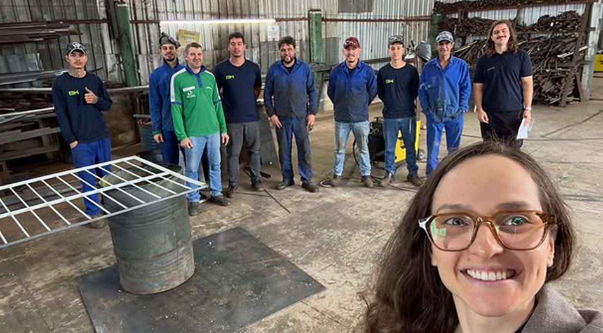

Diagnóstico de fatores psicossociais
Planejamento, instrumentos adequados, entrevistas, observação e análise dos indicadores organizacionais.

e Saúde Organizacional.
A pergunta que esta frente responde: como reconhecer e controlar fatores do trabalho que afetam a saúde e o desempenho profissional? Transformamos exigência normativa e sinais de desgaste em diagnóstico, prioridade e ação organizacional responsável.
Mais clareza sobre os fatores do trabalho que precisam ser controlados, ações rastreáveis e melhoria contínua das condições organizacionais.
Empresas que precisam avaliar fatores de risco psicossocial no trabalho, integrar o tema ao GRO/PGR, responder a sinais de adoecimento ou implantar um processo contínuo de prevenção.
Responda com o cenário real, não com o desejado. Ao final, você vê a pontuação da sua empresa neste tema e pode acessar o resultado completo, com os pontos de atenção.
Planejamento, instrumentos adequados, entrevistas, observação e análise dos indicadores organizacionais.
Mapa de fatores, níveis de atenção, evidências, limites de interpretação e recomendações.
Medidas organizacionais, responsáveis, prazos, indicadores e articulação com SST e profissionais habilitados.
Monitoramento do plano de ação, reavaliações, palestras, orientação de gestores e apoio à implantação.
Para empresas que querem construir o próprio processo de avaliação e gestão de riscos, com acompanhamento técnico.
Desenho da avaliação e comunicação transparente aos participantes.
Aplicação dos instrumentos, entrevistas e análise documental e de indicadores.
Com evidências, níveis de atenção e limites explícitos de interpretação.
O que fazer primeiro, quem responde, quando e como será verificado.
Medidas organizacionais, não apenas orientações individuais.
Implantação das ações, registros e reavaliação periódica.
Escolhemos o formato conforme o estágio do negócio e a capacidade de sustentação. Valores e prazos são definidos após o alinhamento inicial.
Dizemos os limites antes de assinar, não depois. Assumimos apenas aquilo que temos competência e capacidade para entregar.
Pode demandar revisão de processos, papéis, dimensionamento, relações de trabalho e desenvolvimento das lideranças. Não substitui avaliação clínica, jurídica, médica ou de engenharia de segurança.
“De uma forma geral, percebemos uma empresa mais organizada, humana e alinhada. O ambiente de trabalho melhorou, as pessoas se sentem mais ouvidas e o desempenho das equipes evoluiu de maneira consistente.”
Solicite um orçamento para a avaliação dos fatores psicossociais.
Provisório E-mail, telefone e endereço institucionais entram aqui quando os dados oficiais forem liberados.